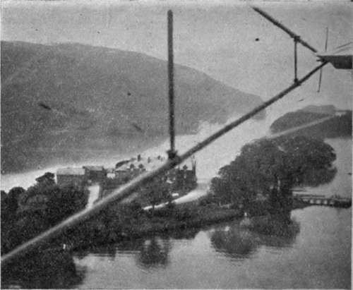
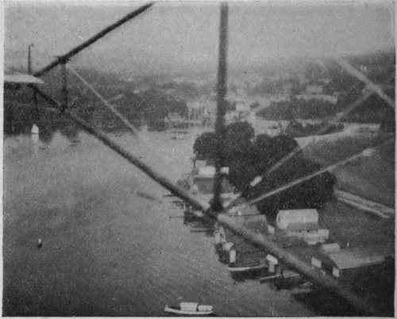
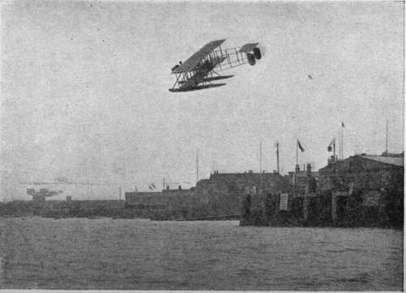

Flying Machines Of To-Day. Part 6
Description
This section is from the book "All About Flying", by Gertrude Bacon. Also available from Amazon: All About Flying.
Flying Machines Of To-Day. Part 6
Glenn Curtiss, the American aviator whose fame is only second to that of the Wrights, was the first to experiment with water-planes; and he did so in all sorts of ways, both with machines to lift directly off the water and those which should rise off platforms built on the decks of ships. In this country the first work was done in the Lake District by Oscar Gnosspelius and Edward Wakefield, their scene of action the glassy surface of Windermere—surely the most picturesque flying-ground in all the world. Here to begin with they tested their hydroplane floats by dragging them through the water at the back of a motor launch, and when they had arrived at the best form they fitted them to specially designed aeroplanes with extremely successful results. Visitors to Lakeland are familiar with the white-winged is water-birds whose home is among the mountains, and some, like the writer, may have been privileged to explore the lovely Windermere shores from above, by their aid. A wonderful power belongs to the flyer at a certain height over lake or sea—that of being able to see down beneath the surface of the water, even when it is rough with breaking waves. In days before the coming of the aeroplane my father succeeded not only in seeing, but also in photographing, the sand shoals at the bottom of the Irish Sea, from a balloon, and the bottom of the lake is clearly visible in a photograph I took from the waterplane over Bowness.
While the work at Windermere was only beginning, just a few miles away, at Barrow, a naval officer, then Commander Schwann (assisted later by S. V. Sippe), stationed there in connection with the building of an ill-fated air-ship, whiled away the time of weary waiting by endeavouring to make a water-plane rise off the docks ; the result of the modest experiments (carried out at Commander Schwann's own expense) proving far more valuable and infinitely less dearly bought, than those afforded by the giant failure of a dirigible which cost the tax-payer so many thousands of pounds. A. V. Roe constructed machines for both the Windermere and Barrow ventures, and learned much knowledge thereby which he has since turned to good account in his famous water-planes of the present day.
Windermere From A Water-Plane
(C. Bacon)
The Ferry Hotel.
Bowness.
(G. Bacon)
(Showing bottom of lake on left of picture)
Equally early in the field were the Shorts at East-church, experimenting for the navy. In proof of the success of their work, Frank McClean, enthusiastic sportsman, who has ever been such a munificent and patriotic supporter of British aviation in general and the splendid work done in Sheppey in particular, flew a Short hydrobiplane in August 1912 right up the Thames, from Eastchurch to Westminster, under the bridges of London, proving visually to the heedless city, chattering idly of foreign progress, what its own countrymen could do. Eighteen months later he took a Short sea-plane right up the Nile as far as Khartoum. The naval sea-planes turned out by the Shorts—oldest established firm of aeroplane constructors in England—are second to none in all the world. As needs must be for sea work, they are large and very strongly constructed, fitted with 'wireless,' weighing, fully loaded with pilot, passenger and fuel, a ton and a half; with wings of 60-foot span, which, for travelling purposes, fold back along the body, and huge floats divided into water-tight compartments. Yet recent machines can travel at 78 miles an hour and climb 3000 feet in eight minutes —surely the last word in efficiency.
Mention has already been made of the extremely successful 'Wight' sea-plane constructed at Cowes by the great shipbuilding firm of J. Samuel White and Co., to the designs of that clever man Howard Wright.
The 'Wight' Sea-Plane Over Cowes.
The writer will not readily forget a flight she was privileged to make over the waters of the Solent in one of these machines a few weeks before the breaking out of the War. The great propeller hydro-biplane rose off the surface of the water after a run of only 40 yards, forcing her way through the top of the waves with a shallow, clean-cut furrow, and but the thinnest cloud of white spray playing about her three-stepped hydroplane floats. The engine, a 200 horse-power Salmson (a Gnome is not well suited for sea-planes since the salt water rusts its polished steel), could be started from the pilot's seat by a self-starting arrangement worked by compressed air on the principle of a soda-water siphon. It is very evident that a means of starting the engine from within must form part of the equipment of every water-plane, since if the engine stops, with the machine out upon the water, it is clearly impossible to expect the pilot to jump out, run round and swing the propeller as he might on dry land.
Landing on water offers a special difficulty to pilots, inasmuch as water being transparent, it is often very hard indeed to estimate the height above its surface. Again and again have machines been smashed up through an aviator thinking himself nearer or farther from the waves than he really was ; but in the case of the 'Wight' machine this trouble need never arise. So well designed is it that the pilot has merely to throttle down his engine until he is travelling at 36 miles an hour, the minimum speed, and then simply to await results, confident that he will settle down gently and without shock from whatever height he descends. This happy fact of course renders night flying over the sea not only possible but safe. Sea flying has this great advantage at least, that there is unlimited space to land on.
Continue to: